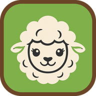

Turn your phone sideways
My Favorite Sheep is played in landscape.

My Favorite Sheep
My Favorite Sheep
One of the flock is a wolf in sheep's clothing
Rounding up the flock
0%
The gate's stuck
Try again